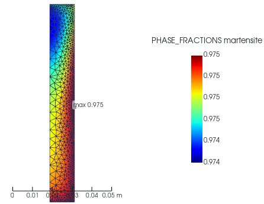
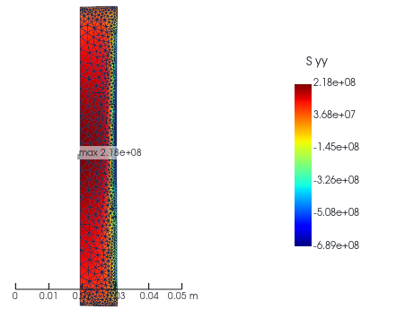
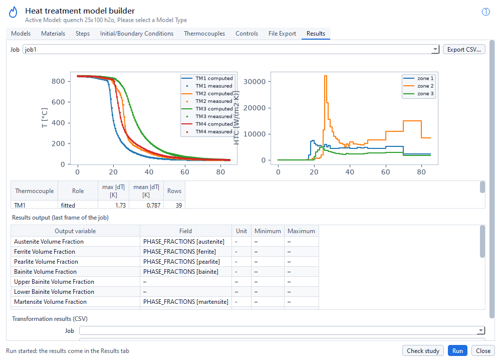
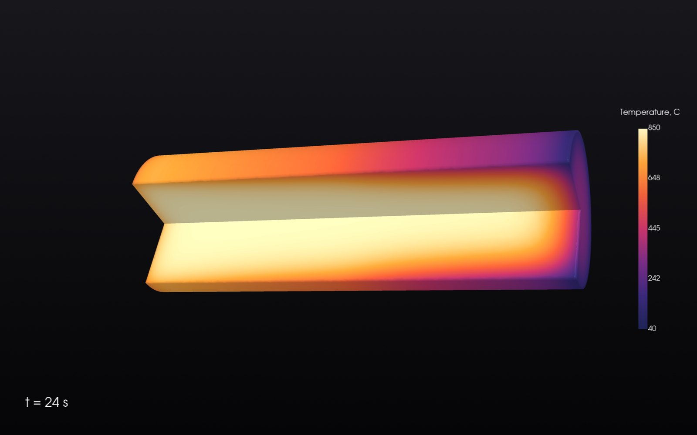

Products / HTPro
HTPro. From the quench tank to the final shape.
Cooling, phases, stress and distortion of a heat-treated steel part, with film coefficients taken from your own thermocouple records.

The gear is a demonstration: an assumed gear, oil film and stand-in transformation data, solved as a 3D slab with SiM2Pro's coupled solver. HTPro itself solves axisymmetric parts today. It is not a measured or validated result.
One model builder, tab by tab.
- 01
Models
Pick the kind of study.
- 02
Materials
Thermal, transformation and mechanical data.
- 03
Steps
Carburize and quench, in order.
- 04
Conditions
Start temperature and the film on each zone.
- 05
Thermocouples
Where they sit, and their records.
- 06
Results
Curves, fields and CSV export.
Four fields, one solution.
Each arrow is a coupling HTPro computes.
- Temperature → phasesThe cooling path sets when austenite decomposes: incubation, then ferrite, pearlite and bainite, and martensite below Ms.
- Phases → temperatureWhen the steel's data give them, the latent heat of each transformation is solved together with the temperature, and conductivity and specific heat follow the phase mixture.
- Temperature → stressThermal strain, and stiffness and yield that change with temperature.
- Phases → stressTransformation strain, transformation plasticity, and the stiffness and yield of the phase mixture.
- Carbon → phasesCarbon shifts the transformation curves and lowers Ms.
- Temperature → carbonCarbon diffusivity depends on the furnace temperature of each carburizing step and on the carbon itself.
- Carbon → stressAn optional expansion per percent of carbon, so a carburized case grows more.
- Phases → carbon, in partAs ferrite forms, the carbon left in the austenite rises, and the kinetics use it.


Not modelled: stress acting back on phases, temperature or carbon.
Measure the cooling. Get the coefficient.
The film coefficient is the number nobody has. HTPro estimates it from thermocouple records, zone by zone, then computes the temperatures with it.
- Film coefficient per zone, against time or surface temperature
- Direct run: temperatures from a known coefficient
- Inverse run: the coefficient from measured temperatures
- Computed and measured curves on one plot, with the error in kelvin


Checked against published experiments.
The quench experiments of Hrnjica & Behrem (2022) ship with the product, and their published results are reproduced.
Tell us about your part.
The part, the process, the question. We reply with what a study would take and what it would show.